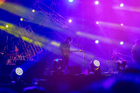

Web Design & Development
International Project
Envato / Themeforest
Fiddle is a musician WordPress theme with creative page transitions. With this version, it can be used for many purposes. Primarily for musicians, personal use, music bands, singers, DJs, and can be used in many categories.
This theme is developed with the WordPress Elementor plugin. You can easily create all the pages with the drag-and-drop method. With the page settings, you can easily make your logo and all other settings. This theme allows you to navigate your website without page refresh with ajax page transitions.